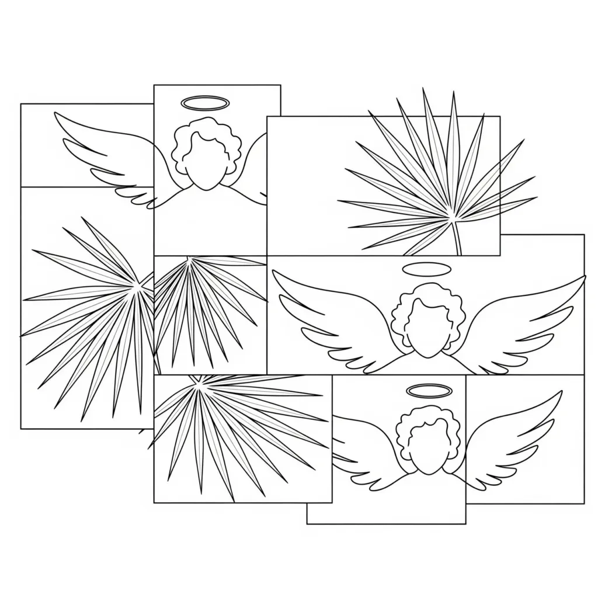

In the story of human consciousness and manifestation, two biblical symbols stand out: the Garden of Eden and the Solomon's Temple. These are not historical or architectural references but metaphors for the inner creative process. Neville Goddard’s teachings help us unlock their deeper meaning, showing how they relate to our imagination, feeling, and the conscious assumption of being.
The Garden of Eden: The Fertile Emotional Soil
Genesis 2:8 tells us:
“And the LORD God planted a garden eastward in Eden; and there he put the man whom he had formed.”
This garden is described as lush, fertile, and full of life—an environment ripe for growth. Neville interprets this as the emotional current, the feeling state that precedes and nurtures all creation.
From Feeling is the Secret (Neville, 1944):
“Feeling is the secret. Feeling is the creative power.”
The garden represents the imaginative and emotional foundation where all desires take root. It is the receptive state—the ‘soil’—in which the seed of imagination is planted and begins to grow. Without the fertile feeling, creation cannot occur.
The Temple: The Conscious “I AM”
Fast forward to the New Testament, where Jesus says in John 2:19:
“Destroy this temple, and in three days I will raise it up.”
And Paul reminds us in 1 Corinthians 3:16:
“Do you not know that you are God’s temple and that God’s Spirit dwells in you?”
Neville Goddard clarifies that the Temple is not a physical structure but the conscious state of ‘I AM’ awareness within us. In The Power of Awareness (Neville, 1954), he teaches:
“I am the temple of the living God. The temple is the conscious ‘I AM’ inside you, the awareness which assumes and creates reality.”
This conscious assumption—knowing and feeling oneself as the creator—is the throne from which reality is shaped. It is the active, ruling presence that brings the imagined desires into manifestation.
The Creative Cycle: From Garden to Temple
Together, the Garden and the Temple represent the full cycle of creation according to Neville’s teachings:
-
Feel the Garden — Enter the emotional, imaginative state where desires are seeded and nurtured.
-
Assume the Temple — Step into the conscious ‘I AM’, the inner throne where you assume your desire fulfilled.
-
Manifest Reality — As your assumption settles, the outer world rearranges itself to match the inner conviction.
This cycle shows why the wilderness and the temple scenes both appear in Jesus’ life. The wilderness (like Eden) is the imaginative, emotional ground of testing and growth. The temple is the conscious authority of manifestation, the throne of creative power.
In summary: The Garden is the emotional current that nourishes imagination, while the Temple is the conscious ‘I AM’ presence that rules and manifests. Together, they reveal the heart of Neville Goddard’s Law of Assumption—creation begins within feeling and is completed in the conscious assumption of being.
About The Author | Architecture Series | Eden Series | Solomon Series | Spiritual Geography